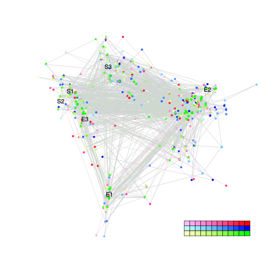
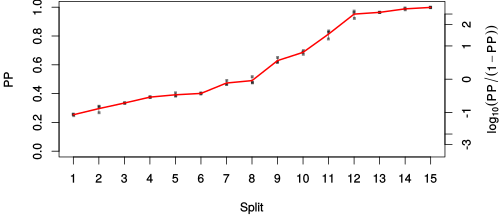
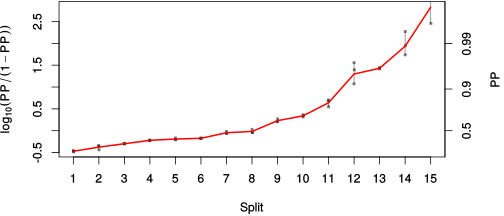

| chain # | burnin | subsample | Iterations (remaining) | command line | subdirectory | directory |
|---|---|---|---|---|---|---|
| 1 | 10000 | 1 | 90000 | /usr/local/bali-phy-3.0-beta2/bin/bali-phy E7_AA_red3_Alpha_all4Manatees_BetaGamma.fas -s 24324 -n E7_red3_Alpha_all4Manatees_BetaGamma_c1 | E7_red3_Alpha_all4Manatees_BetaGamma_c1-1 | /home/willemse/data/trees/BaliPhy/E7 |
| 2 | 10000 | 1 | 90000 | /usr/local/bali-phy-3.0-beta2/bin/bali-phy E7_AA_red3_Alpha_all4Manatees_BetaGamma.fas -s 83457 -n E7_red3_Alpha_all4Manatees_BetaGamma_c2 | E7_red3_Alpha_all4Manatees_BetaGamma_c2-1 | /home/willemse/data/trees/BaliPhy/E7 |
| 3 | 10000 | 1 | 90000 | /usr/local/bali-phy-3.0-beta2/bin/bali-phy E7_AA_red3_Alpha_all4Manatees_BetaGamma.fas -s 73821 -n E7_red3_Alpha_all4Manatees_BetaGamma_c3 | E7_red3_Alpha_all4Manatees_BetaGamma_c3-1 | /home/willemse/data/trees/BaliPhy/E7 |
| P(data|M) = -3024.957 +- 0.695 | Complete sample: 6307 topologies | 95% Bayesian credible interval: 1932 topologies |
Phylogeny Distribution

| Partition support: Summary |
| Partition support graph: SVG |
{kind=link}
| 50% consensus | Newick (+PP) | SVG | |||||
| 66% consensus | Newick (+PP) | SVG | |||||
| 80% consensus | Newick (+PP) | SVG | |||||
| 90% consensus | Newick (+PP) | SVG | |||||
| 95% consensus | Newick (+PP) | SVG | |||||
| 99% consensus | Newick (+PP) | SVG | |||||
| 100% consensus | Newick (+PP) | SVG | |||||
| MAP | Newick (+PP) | SVG | |||||
| greedy | Newick (+PP) | SVG |
{kind=link}
{kind=link}
{kind=link}
{kind=link}
{kind=link}
{kind=link}
{kind=link}
{kind=link}
Alignment Distribution
Partition 1
| Diff | Min. %identity | # Sites | Constant | Informative | ||||
|---|---|---|---|---|---|---|---|---|
| Initial | FASTA | HTML | Diff | 1.82% | 117 | 1 (0.855%) | 108 (92.3%) | |
| Best (WPD) | FASTA | HTML | AU | 14% | 273 | 8 (2.93%) | 92 (33.7%) |
Mixing
{kind=link}
{kind=link}
| burnin (scalar) | ESS (scalar) | ESS (partition) | ASDSF | MSDSF | PSRF-CI80% | PSRF-RCF |
|---|---|---|---|---|---|---|
| 5288 | 337.7 | 360.614 | 0.012 | 0.030 | 1.001 | 1.01 |
Projection of RF distances for the first 3 chains3D | Variation of split PPs across chains |
Scalar variables
| Statistic | Median | 95% BCI | ACT | ESS | burnin | PSRF-CI80% | PSRF-RCF |
|---|---|---|---|---|---|---|---|
| prior | -351.5 | (-405.8, -302.4) | 86.02 | 3138 | 454 | 0.9998 | 0.9891 |
| prior_A1 | -365.9 | (-417.5, -318.6) | 90.6 | 2980 | 327 | 1 | 0.9917 |
| likelihood | -2988 | (-3022, -2958) | 353 | 764 | 417 | 1.001 | 0.9828 |
| logp | -3340 | (-3386, -3299) | 110.6 | 2440 | 1103 | 1.001 | 1.003 |
| Heat.beta | 1 | ||||||
| Scale1 | 7.116 | (4.271, 10.87) | 1.143 | 236187 | 143 | 0.9999 | 1.001 |
| S1.F.pi.A | 0.05305 | (0.03879, 0.06835) | 8.016 | 33680 | 761 | 1 | 1.001 |
| S1.F.pi.R | 0.06177 | (0.04499, 0.08043) | 8.777 | 30761 | 610 | 0.9999 | 0.9992 |
| S1.F.pi.N | 0.03433 | (0.02344, 0.04677) | 9.378 | 28789 | 627 | 0.9999 | 1.005 |
| S1.F.pi.D | 0.0652 | (0.04873, 0.08305) | 14.9 | 18118 | 571 | 1.001 | 0.9964 |
| S1.F.pi.C | 0.05075 | (0.03352, 0.07033) | 8.586 | 31445 | 592 | 0.9992 | 1.005 |
| S1.F.pi.Q | 0.05727 | (0.04284, 0.0725) | 11.27 | 23962 | 215 | 1 | 1.009 |
| S1.F.pi.E | 0.09133 | (0.0719, 0.1123) | 16.47 | 16389 | 316 | 1 | 0.9949 |
| S1.F.pi.G | 0.06719 | (0.04756, 0.08933) | 8.338 | 32383 | 420 | 1 | 0.9988 |
| S1.F.pi.H | 0.0335 | (0.02152, 0.04715) | 12.44 | 21705 | 690 | 0.9998 | 1.004 |
| S1.F.pi.I | 0.04389 | (0.03066, 0.05844) | 10.65 | 25364 | 360 | 1 | 0.9977 |
| S1.F.pi.L | 0.07584 | (0.05583, 0.09689) | 13.07 | 20664 | 242 | 0.9999 | 0.9988 |
| S1.F.pi.K | 0.0257 | (0.01603, 0.03686) | 8.538 | 31624 | 474 | 0.9999 | 1.002 |
| S1.F.pi.M | 0.00668 | (0.002594, 0.01185) | 8.096 | 33349 | 730 | 1 | 0.9997 |
| S1.F.pi.F | 0.03881 | (0.02553, 0.05422) | 17.09 | 15795 | 409 | 1.001 | 1.01 |
| S1.F.pi.P | 0.05546 | (0.0378, 0.07444) | 26.21 | 10301 | 368 | 1 | 0.9945 |
| S1.F.pi.S | 0.05852 | (0.04344, 0.07458) | 9.559 | 28245 | 216 | 1 | 1.001 |
| S1.F.pi.T | 0.05694 | (0.04132, 0.073) | 8.066 | 33472 | 339 | 1 | 1.006 |
| S1.F.pi.W | 0.004621 | (0.0005259, 0.01103) | 9.244 | 29209 | 368 | 1 | 0.999 |
| S1.F.pi.Y | 0.03947 | (0.02478, 0.0559) | 13.44 | 20083 | 293 | 1 | 1.001 |
| S1.F.pi.V | 0.07189 | (0.05555, 0.08892) | 10.41 | 25934 | 556 | 1 | 1 |
| I1.RS07.meanIndelLengthMinus1 | 2.681 | (1.633, 4.009) | 108.7 | 2483 | 318 | 1.001 | 0.9978 |
| I1.RS07.logLambda | -3.528 | (-3.916, -3.157) | 45.21 | 5972 | 134 | 1 | 0.9976 |
| |A1| | 230 | (201, 254) | 799.5 | 337 | 5288 | 0.9533 | 0.988 |
| #indels1 | 49 | (41, 58) | 92.09 | 2931 | 327 | 0.9429 | 0.9939 |
| |indels1| | 176 | (144, 208) | 325.1 | 830 | 876 | 0.9677 | 0.9842 |
| #substs1 | 540 | (518, 566) | 727.2 | 371 | 4926 | 0.9588 | 0.9799 |
| Scale1*|T| | 8.738 | (7.78, 9.722) | 70.33 | 3838 | 139 | 0.9995 | 0.9979 |
| |A| | 230 | (201, 254) | 799.5 | 337 | 5288 | 0.9533 | 0.988 |
| #indels | 49 | (41, 58) | 92.09 | 2931 | 327 | 0.9429 | 0.9939 |
| |indels| | 176 | (144, 208) | 325.1 | 830 | 876 | 0.9677 | 0.9842 |
| #substs | 540 | (518, 566) | 727.2 | 371 | 4926 | 0.9588 | 0.9799 |
| |T| | 1.228 | (0.7243, 1.818) | 1.014 | 266403 | 235 | 1 | 0.9999 |